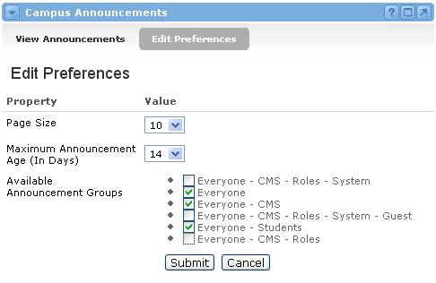

Announcement Preferences
Based on the number of announcements that could be generated from this channel, a number of preferences are available to allow a user to personalize their announcement view. Click the preferences icon to view and edit these preferences. The following preferences can be altered:
- Page Size - The number of announcements to be shown on each page
- Maximum announcement age (in days)
- Available announcement groups - This lists all portal groups and offerings of which the user is currently a member. Users must select those groups for which they wish to receive announcements, from the displayed list. By default, all groups are initially selected.

Announcement Administration
Some individuals will see additional features within the View Announcement view of the channel. Administrative users will have three additional options
- Add Announcement - Allows entry of announcement text and the ability to specify the group or groups who will receive the announcement.
- Manage Announcements - Displays the list of currently active announcements. From this list users may edit or delete an announcement by selecting the appropriate link.
- Change Administrator- Allows individuals and/or groups to be granted permission to add, edit and delete announcements.